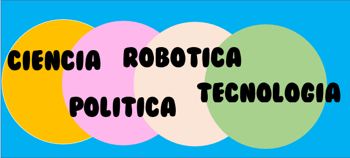
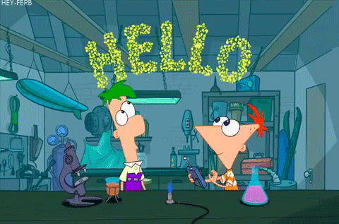

|

Hola!, bienvenido a mi primera pagina web.
> Te doy la bienvenida a mi blog donde podrás encontrar información sobre las noticias tecnologias del mundo y política mundial , aunque también encontraras algo sobre desarrollo de videojuegos.
Mi principal objetivo en este blog es generar y proporcionar material formativo de las distintas tecnologías, así como aquellos temas que vaya aprendiendo. Considero que una de las mejores
formas de aprender cómo funciona algo es intentar explicarlo, porque no puedes explicar algo que no comprendes completamente. Por ese motivo, también encontrarás reseñas sobre librerías
que haya decidido aprender, y así ayudarnos mutuamente a entenderlas mejor.
En la medida de lo posible, también intentaré desarrollar varios temas que vaya abarcando. También podrás encontrar artículos relacionados con el desarrollo en general,
o el desarrollo particular de las web, robotica o videojuegos.
Todo ello podrás encontrarlo perfectamente estructurado en distintas secciones de la web, así que te invito a que navegues por ellas y que disfrutes de los contenidos que pongo a tu disposición.
Cordialmente,
Natalia Paucar Rojas 4TO "C" |

¿Qué es ciencia y
tecnologia?
|
| Los estudios sociales sobre ciencia y tecnología abarcan un campo transdisciplinar de estudios sobre los efectos culturales, éticos y políticos del conocimiento científico y la innovación tecnológica. Colocan el énfasis en la interpretación sobre las utilidades, apropiaciones e impactos en la vida cotidiana de las personas, con el objetivo de romper las antiguas barreras de investigación científico-técnica.
En las regiones de habla hispana, este tipo de inquietudes y de reflexiones han llegado con el nombre común de estudios de/sobre Ciencia, Tecnología, y Sociedad (abreviado CTS), lo que en las regiones de habla inglesa se conoce como Science and Technology Studies (Estudios de Ciencia y Tecnología) o Science, Technology and Society (Ciencia, Tecnología y Sociedad), ambas con el acrónimo STS. En las regiones de lengua hispana, la multidisciplinariedad en CTS incluye desde el principio los ámbitos de la sociología, la filosofía, la historia y la antropología, así como incorpora desde sus orígenes en los movimientos en defensa de los derechos humanos, el movimiento feminista, las corrientes medioambientalistas, pacifistas y los primeros grupos de LGBT surgidos sobre todo tras la guerra del Vietnam. Por sus orígenes y naturaleza vemos cierto paralelismo entre este campo y otros tipos de estudios culturales.
Dado el carácter universal de la ciencia, su influencia se extiende a todos los campos de la sociedad, desde el desarrollo tecnológico a los modernos problemas de tipo jurídico relacionados con campos de la medicina o la genética. En ocasiones la investigación científica permite abordar temas de gran calado social como el Proyecto Genoma Humano y grandes implicaciones éticas como el desarrollo del armamento nuclear, la clonación, la eutanasia y el uso de las células madre.
Asimismo, la investigación científica moderna requiere, en ocasiones, de importantes inversiones en grandes instalaciones como grandes aceleradores de partículas (CERN), la exploración espacial o la investigación de la fusión nuclear en proyectos como ITER
Desde los orígenes de la humanidad que el conocimiento es un tema central en la forma de vida. Las primeras civilizaciones hicieron uso y registro de sus conocimientos por diferentes tradiciones y mecanismos, los cuales institucionalizaron la existencia de la ciencia y tecnología que entendemos hoy, sin que fueran llamadas así. En las civilizaciones china y egipcia, se le otorgó relevancia a la tecnología por sobre a la ciencia, siendo esta una primera manifestación sistemática de las culturas materiales. En contraste, la civilización griega tuvo un enorme foco en la reflexión para acercarse a la comprensión de la realidad, estableciendo los cimientos de la filosofía y la ciencia moderna.
Los siglos posteriores a la caída de Roma y el auge del cristianismo (en occidente) y el islamismo (en Oriente) vincularon las búsquedas de la verdad a una explicación teológica y monista. No fue hasta el Renacimiento Europeo, cuando la Revolución científica(un periodo histórico dominado por la reflexión de la realidad con una base experimental) sistematizó y reinterpretó lo que se entiende como conocimiento. El surgimiento de la Royal Society en Inglaterra y de la Academia de Ciencias de Francia institucionaliza la ciencia con fines públicos. Durante el siglo XVIII la comunidad científica francesa le dio prioridad al desarrollo de la ciencia, bajo la creencia de que sólo lo que fuera conocido teóricamente sería confiable y tendría éxito.
La industrialización de la ciencia y la tecnología pasa por tres etapas a lo largo de la historia. La primera, el período amateur (entre los siglos XVII y XVIII, coincidiendo con la Revolución Científica). Durante esa época los científicos no están especializados pero, por otra parte, son autosuficientes económicamente. Aparecen las primeras asociaciones y comunicaciones regulares entre científicos. A esta fase le sigue un período académico (entre el siglo XVIII y la Segunda Guerra Mundial). Emergen entonces los primeros laboratorios privados de investigación y desarrollo. Los científicos se especializan y son subvencionados ahora por universidades pero manteniendo la independencia de acción respecto al poder político.5?
Por último, el período profesional o tecnocientífico (que abarca desde la Segunda Guerra Mundial hasta la actualidad, conocido como Big Science o Gran Ciencia). Hay un aumento del coste y escala de las investigaciones, que provoca la dependencia de científicos e investigaciones con las fuentes económicas del ejército, los estados y las industrias. Aparecen los primeros proyectos globales de investigación, haciéndose patentes los lazos entre conocimiento, innovación y cultura. La promoción de la ciencia y tecnología en relación a su impacto económico y social comienzan a orientar agendas políticas desde finales de la Segunda Guerra Mundial. Actualmente el desarrollo de un país es medido sobre la base de lo que se dedica a ciencia y a tecnología, sin embargo, invertir en esos rubros no siempre asegura el enriquecimiento ni el progreso de un país. |

|
Inicio -
Nosotros -
Servicios -
Contactanos
Copyright 2020
Mandanos un mensaje via email a
paucarnatalia10@gmail.com
|